La Maison
Guten Tag. Womit beginnen wir?
Heute–Besuche–zur BuchungLe Registre öffnen
Ein Klick oder die Taste 1 bis 6 öffnet das Werkzeug. Darunter stellt sich jedes einzeln vor.
Salle I
Le Bureau
Die Website des Hauses, Seite für Seite zum Anfassen.
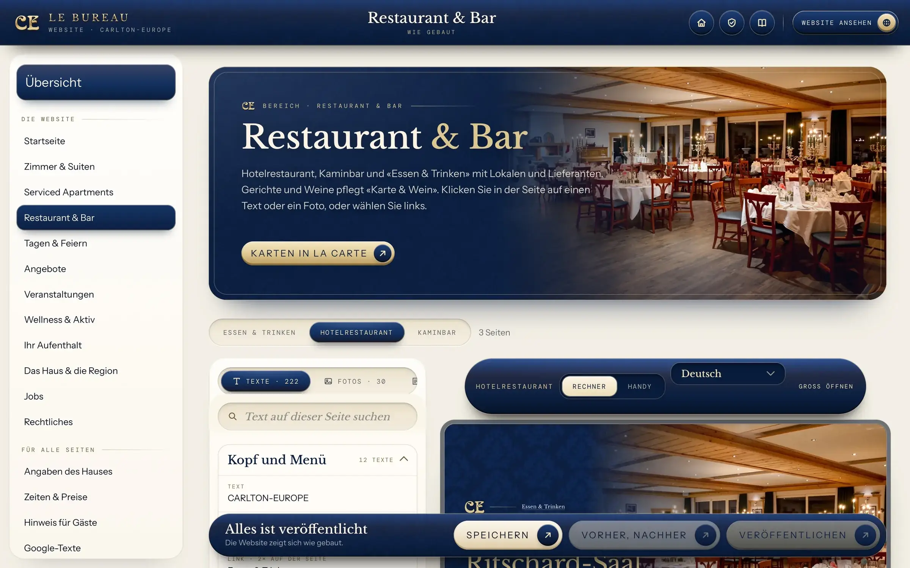
So geht’s
Text oder Foto ändernLinks den Bereich wählen, in der Vorschau auf den Text oder das Foto klicken, neu schreiben oder ein anderes Foto wählen, speichern.
Zeiten und PreiseUnter Zeiten & Preise stehen alle Zahlen der Website untereinander: Check-out, Rezeption, Frühstück, Preise. Zahl überschreiben, speichern.
Andere SprachenDie Website gibt es auf Deutsch, Englisch und Französisch. Unter Sprachen tragen Sie die Übersetzung Ihrer Änderung ein.
Online stellenGespeichert ist erst ein Entwurf. Vorher, nachher zeigt den Unterschied, Veröffentlichen bringt ihn auf die Website.
Salle II
La Carte
Gerichte, Preise und Weine der Karten des Hauses. Ein Knopf setzt die neue PDF.
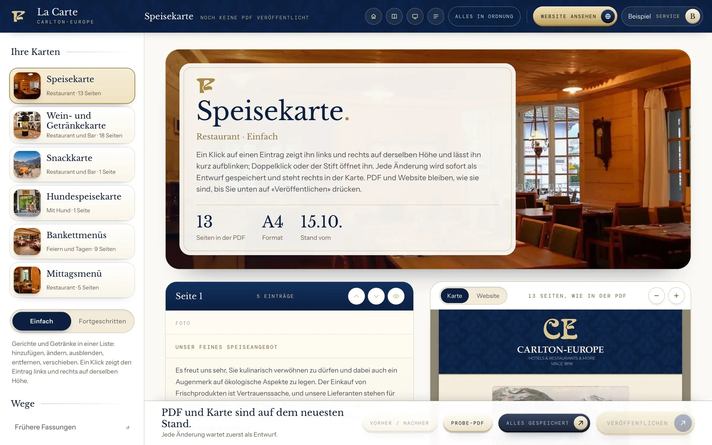
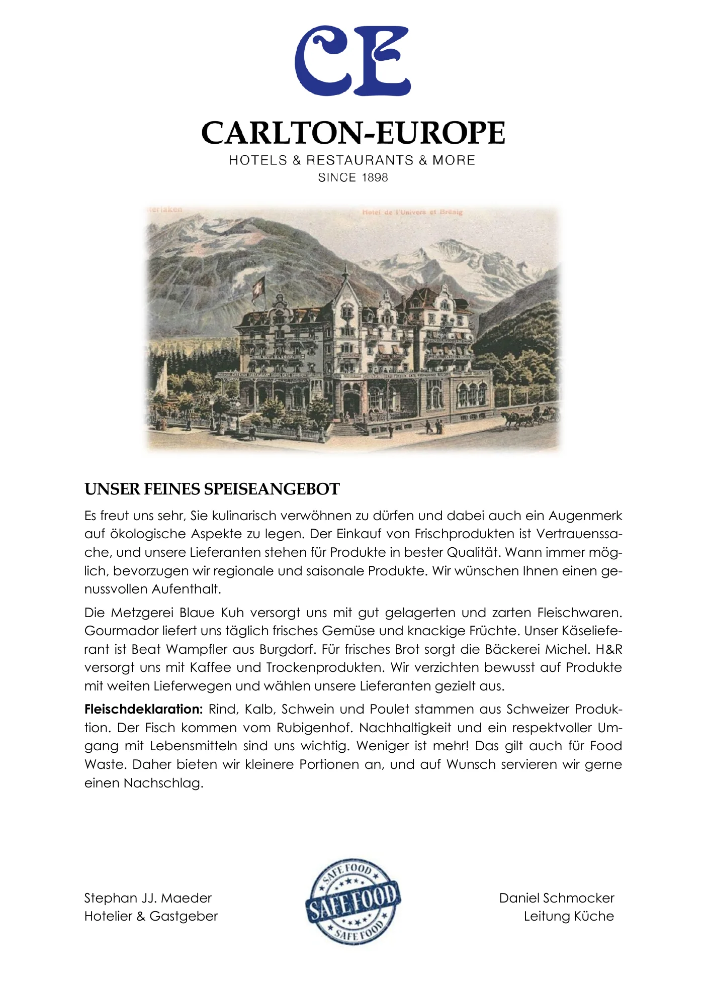
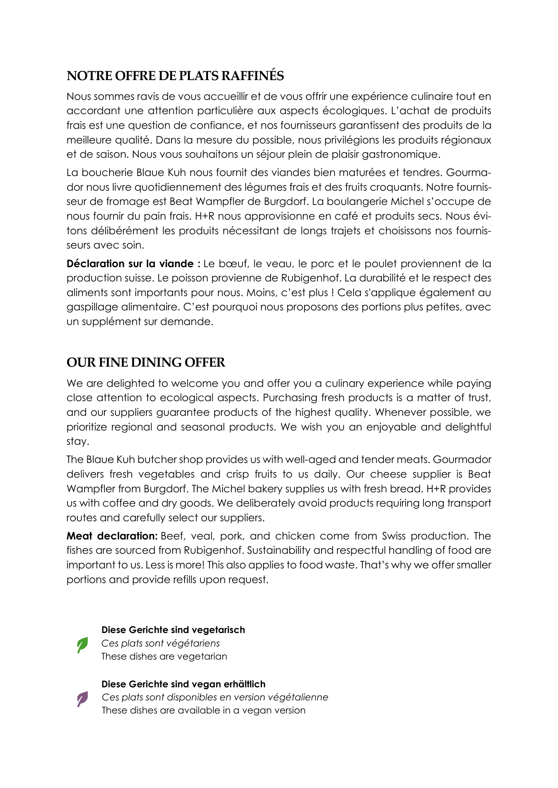
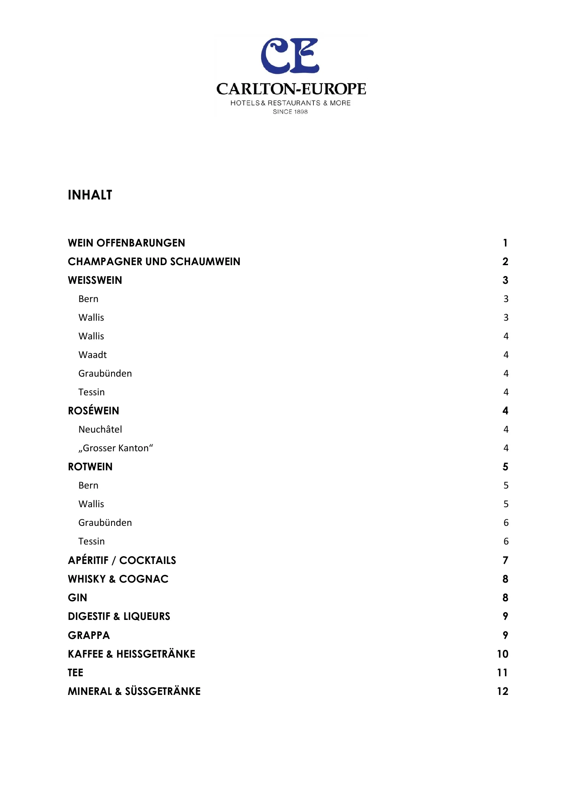
So geht’s
Gericht oder Preis ändernLinks die Karte wählen, das Gericht anklicken, Name, Beschreibung oder Preis überschreiben. Rechts sehen Sie sofort die Karte.
Neues GerichtBei der passenden Gruppe auf Eintrag hinzufügen klicken und ausfüllen. Mit den Pfeilen verschieben Sie ihn an die richtige Stelle.
Vorübergehend wegGibt es ein Gericht gerade nicht, nehmen Sie es mit Ausblenden heraus. Es bleibt gespeichert und kommt später zurück.
Neue Karte druckenProbe-PDF zeigt die Karte vorab, Veröffentlichen setzt die PDF neu und ändert die Karte auf der Website gleich mit.
Salle III
L’Imprimerie
Karten, Einladungen und Gutscheine im Stil des Hauses, aus 250 fertigen Vorlagen und ganz ohne Grafikprogramm.
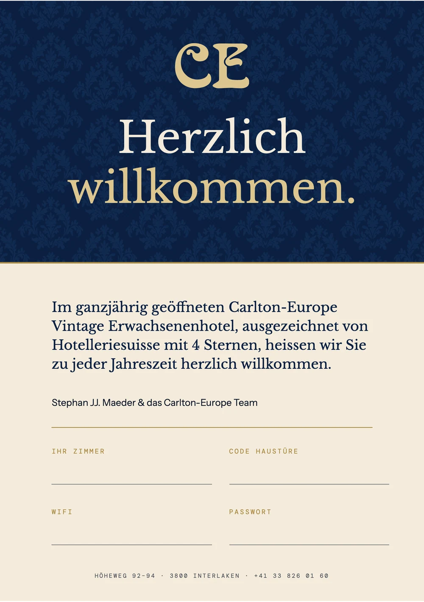
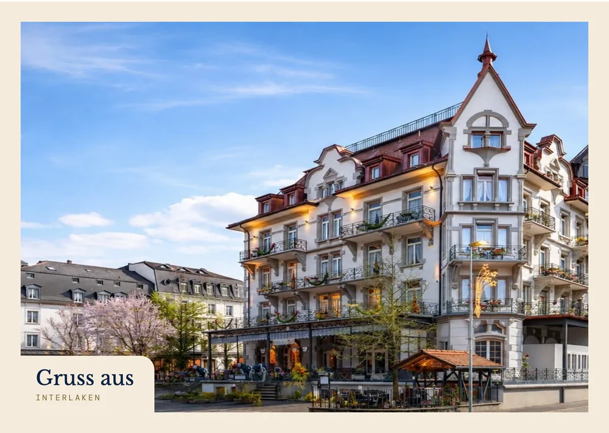
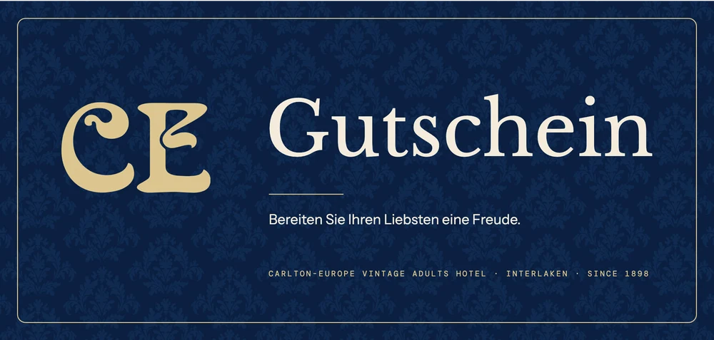
So geht’s
Sagen, was Sie brauchenOben ins Feld einen Satz schreiben, etwa Neujahrsplakat, und Fünf Entwürfe drücken. Oder unter Arten und Vorlagen eine der 250 fertigen Vorlagen mit Texten, Zeiten und Preisen des Hauses nehmen.
Einen Entwurf wählenSie bekommen fünf fertige Entwürfe im Stil des Hauses. Den passenden anklicken.
AnpassenIm Blatt auf einen Text oder ein Foto klicken und ändern. Datum, Preis, Bild, alles direkt am Blatt.
DruckenDruckfertig speichern legt eine PDF mit Beschnitt für die Druckerei an, oder Sie drucken selbst.
Ihre Arbeiten bleiben im Browser des Rechners, auf dem Sie sie anlegen.
Salle IV
La Réception
Die Rezeption im Chat auf jeder Seite und in der Zimmermappe, und bei Ihnen der Eingang.
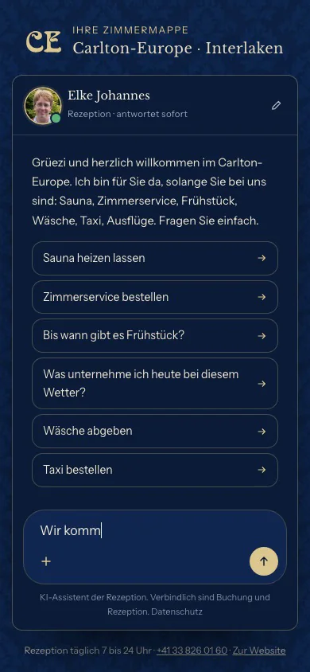
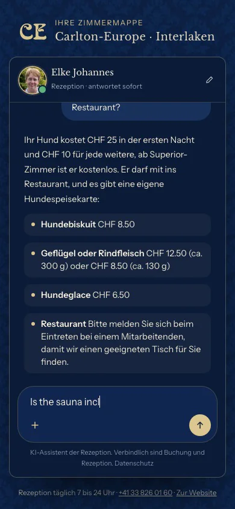
So geht’s
Gäste fragen im ChatAuf jeder Seite der Website und in der Zimmermappe können Gäste der Rezeption schreiben. Der Chat antwortet sofort, aus Ihren Seiten und Unterlagen, in der Sprache des Gastes.
Anfragen beantwortenMöchte ein Gast ein Zimmer, einen Tisch oder eine Feier, steht die Anfrage im Eingang, mit einem Entwurf für Ihre Antwort. Verschickt wird nur, was Sie selbst schicken.
Lücken schliessenWusste der Chat etwas nicht, steht die Frage unter Das wurde gefragt. Antwort einmal nachtragen, ab dann antwortet er selbst.
Salle V
Le Livre
Die Marke des Hauses zum Arbeiten, für Sie und für jede Agentur.
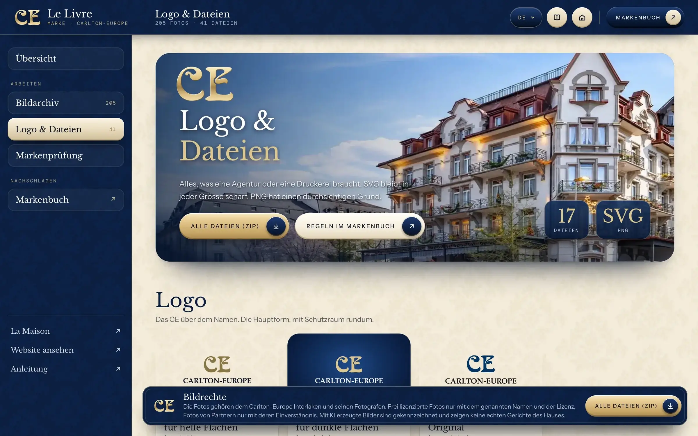
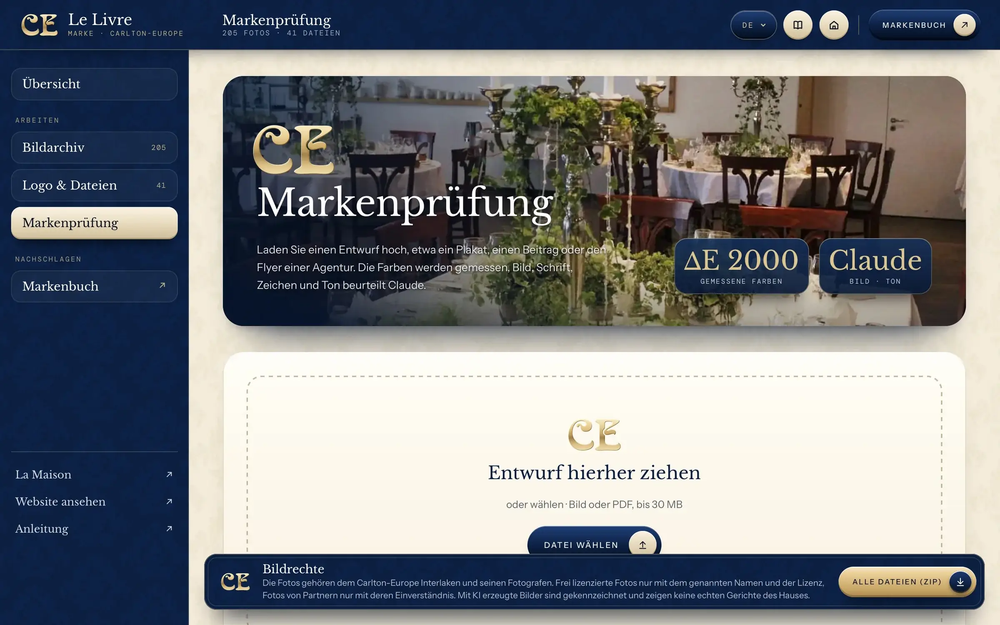
So geht’s
Ein Foto holenIm Bildarchiv ein Foto anklicken, Grösse wählen (Instagram, Story, Website oder Druck) und herunterladen. Bei nachgeschärften Fotos zeigt ein Knopf das Original.
Logo weitergebenUnter Logo & Dateien liegen Zeichen, Logo, Tapete und Farben. Alle Dateien (ZIP) lädt alles in einem Paket für Agentur oder Druckerei.
Einen Entwurf prüfenPlakat oder Flyer einer Agentur in die Markenprüfung ziehen. Le Livre sagt Punkt für Punkt, was zum Haus passt und was nicht.
- Nacht#06142B
- Marine#0B1F40
- Blau#12305E
- Weiss#FBF6EA
- Papier#F4ECDC
- Creme#E8DBBF
- Gold#DCC68F
- Taupe#8A7545
- Tinte#0C1526
Salle VI
Le Registre
Wer Ihre Website besucht: woher die Gäste kommen, was sie sich ansehen, wie lange sie bleiben und wie oft es weiter zur Buchung geht.
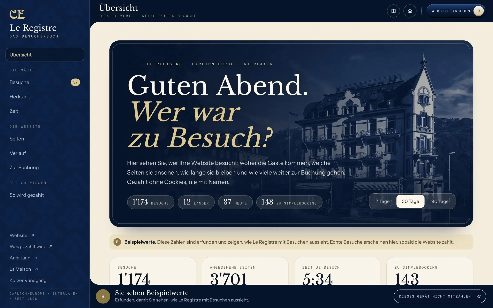
- 1’153Besucheauf der Website, in dreissig Tagen
- 244Buchungsfenster geöffnetetwa jeder fünfte Besuch
- 152weiter zu SimpleBookingknapp zwei Drittel davon
- ·gebuchtzählt SimpleBooking, nicht die Website
Beispielwerte, bis die Website echte Besuche zählt · letzte 30 Tage
Gezählt ohne Cookies, nie mit Namen. Was nach dem Klick im Buchungssystem geschieht, sieht nur SimpleBooking.